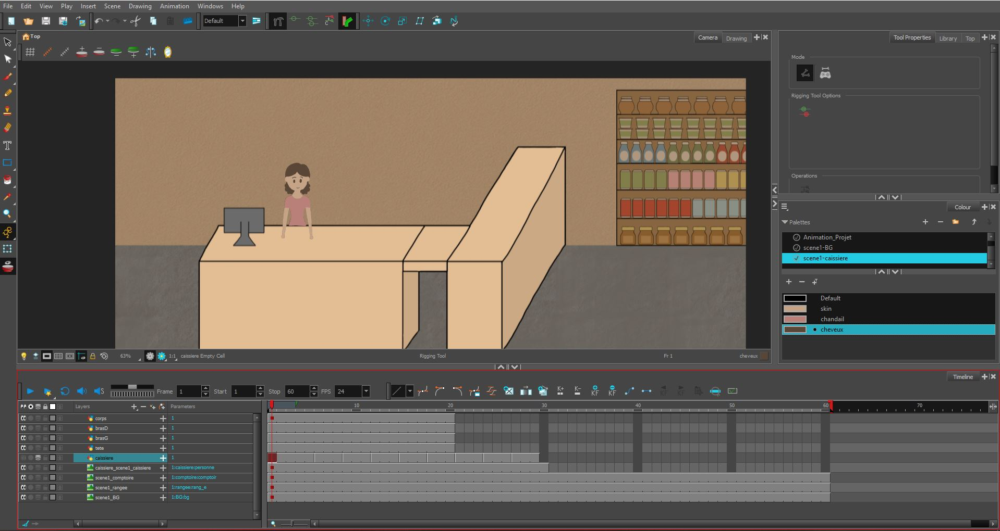

Différents prototypes
Maquettes du site
Aliquam tempor arcu nibh, non dignissim tellus tempus sit amet. Aenean quis varius ante. Quisque dignissim vitae ipsum sed gravida. Cras pellentesque dui vitae nisl hendrerit consequat. Aliquam erat volutpat. Donec eu erat lacus. Phasellus placerat arcu eget felis gravida, sit amet pharetra felis posuere.
maquette 1

maquette 2

maquette 3

maquette 4

maquette 5

Premiers tests avec Harmony
Lien vers la vidéo La vidéo réalisée représente une partie du travail fait sur la première scène de mon animation. Il s'agit d'un timelaps sur comment "rigger" ses personnages. On peut aussi voir au début qu'il est possible d'ajouter des palettes de couleurs personnalisées qui sont très pratique quand on veut s'y retrouver dans nos objets ou notre composition, surtout quand on commence à avoir beaucoup d'éléments différents.